استقلال السودان 71
طفل من الدوحة يحمل صورة جدّه ودفترًا وبذرة، ويعود إلى السودان. في كل مكان يزوره يضيف أحد الناس خيطًا أو خرزة إلى دفتره، وفي النهاية يزرع البذرة مع جدّه وصديقه.
عرض متحرك للستوري بورد: كل مشهد بلقطاته الثلاث وتعليقه الصوتي مكتوبًا. التفاصيل الكاملة لكل مشهد أسفل الصفحة.
الرحيل والعودة
قطر والاتصال بالجد
00:00 – 00:18الطفلجدّي، هل أستطيع أن أرى المكان الذي تحكي عنه؟
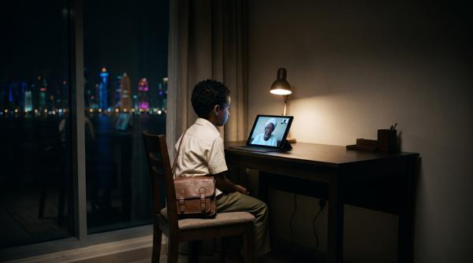
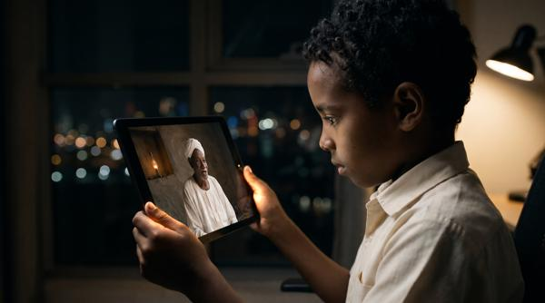

- الكاميرا
- متوسطة قرب النافذة ثم اقتراب على الوجه
- الصوت
- صوت الجد عبر المكالمة، المدينة ليلًا
- الانتقال
- من وجه الجد على الشاشة إلى وجهه شابًا في الصورة القديمة
صورة الذاكرة
00:18 – 00:30الراويخرج يبحث عن السودان الذي عرفه جدّه.
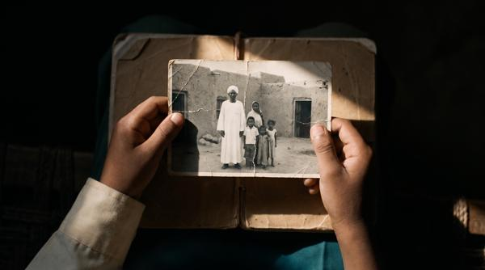
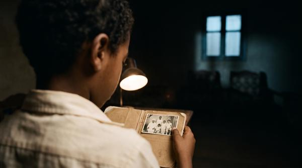
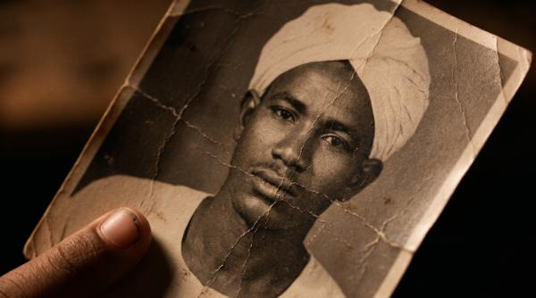
- الكاميرا
- قريبة على الصورة واليدين
- الصوت
- ورق، ونَفَس الطفل
- الانتقال
- اليد تضع الصورة وتنفتح على البذرة
البذرة وسؤال البداية
00:30 – 00:40الطفلمن أين نبدأ؟


- الكاميرا
- تفصيل البذرة ثم الدفتر
- الصوت
- النواة، سحّاب الحقيبة، القلم
- الانتقال
- غلاف الدفتر ينغلق ويكشف المطار
السفر من قطر
00:40 – 00:50الراويحمل صورة، ودفترًا، وبذرة صغيرة.

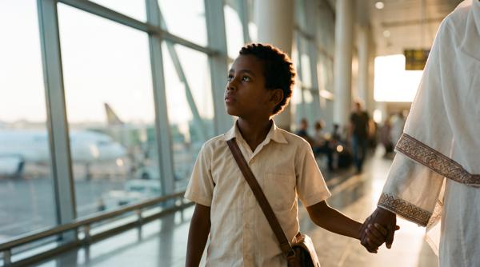

- الكاميرا
- تتبّع هادئ مع الطفل وأمه
- الصوت
- المطار، ثم هواء فناء البيت
- الانتقال
- النيل من نافذة الطائرة يصبح الخيط بين يدي الجد
عند باب البيت
00:50 – 01:05الطفلهل نجد كلّ شيء كما تركناه؟

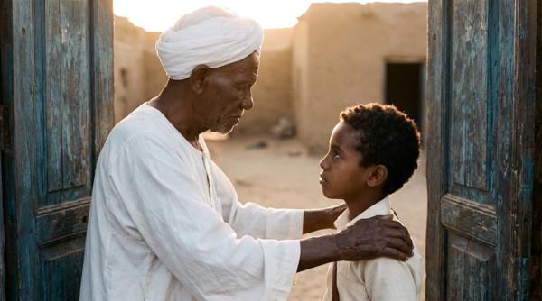
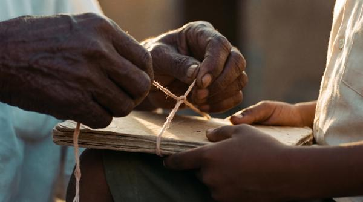
- الكاميرا
- ثنائية ثم نظرة إلى الفناء
- الصوت
- ريح، صرير الباب، صمت اللقاء
- الانتقال
- من عتبة البيت إلى عتبة المدرسة
المدرسة الصامتة
01:05 – 01:15الراويانقطع أطفال عن مدارسهم وأصدقائهم.
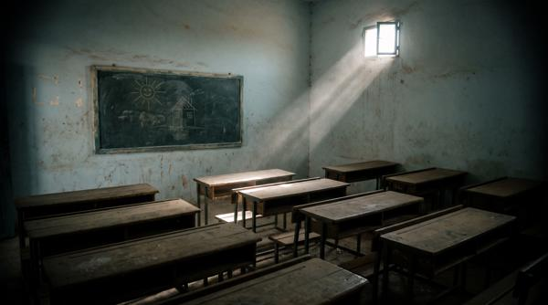

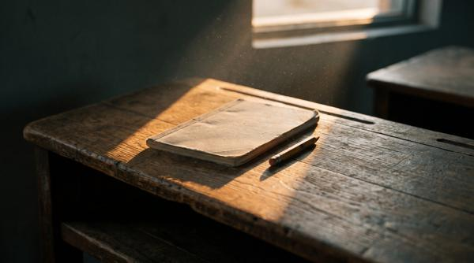
- الكاميرا
- ثابتة على المقاعد الخالية
- الصوت
- ضحكات بعيدة تتلاشى
- الانتقال
- صوت الأدوات يسبق الصورة
إصلاح باب البيت
01:15 – 01:30الجدستحتاج أشياء كثيرة إلى أيدينا.


- الكاميرا
- أيدي الكبار والطفل يساعد
- الصوت
- الأدوات اليدوية والجيران
- الانتقال
- الباب يُفتح على الكاميرا ويكشف سواكن
الرحلة: الناس والأماكن
البحر وسواكن
01:30 – 01:44الطفلماذا تحبّ أن يعرف الزائر عن هذا المكان؟
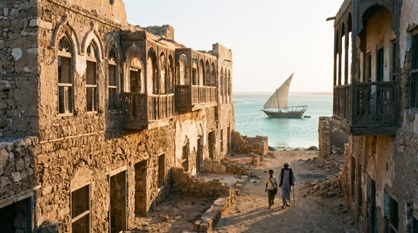
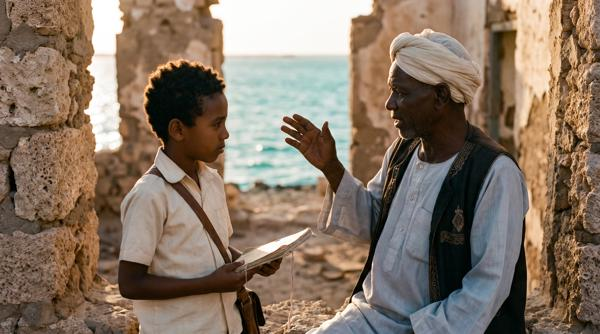
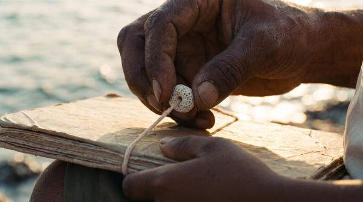
- الكاميرا
- واسعة للمكان ثم الطفل والمرشد
- الصوت
- أمواج وخطوات
- الانتقال
- خرزة المرجان تصبح قبة جبل التاكا
كسلا وجبل التاكا
01:44 – 01:56الراويما الذي يربط الإنسان بمكانه مهما ابتعد؟
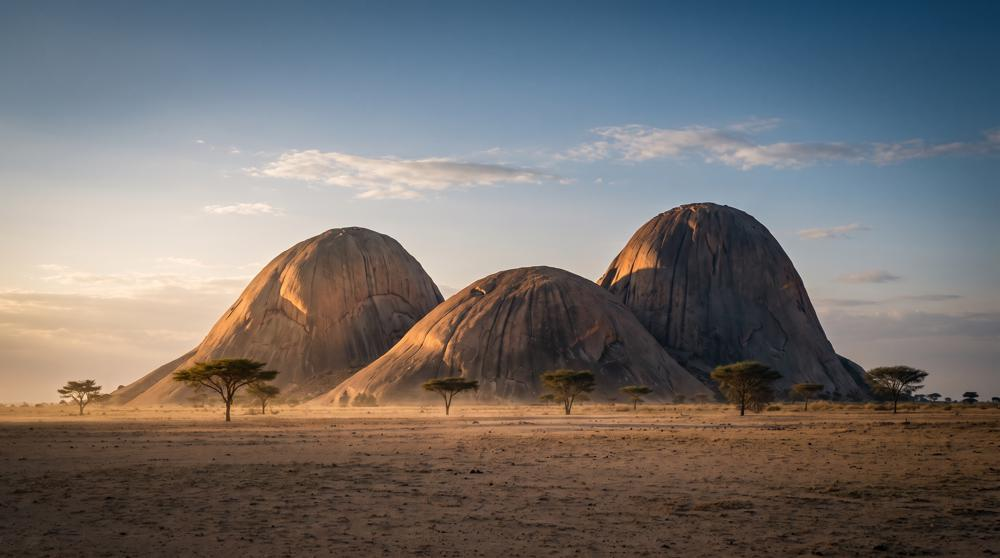
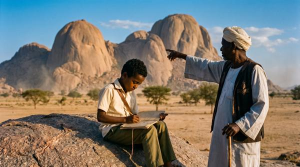
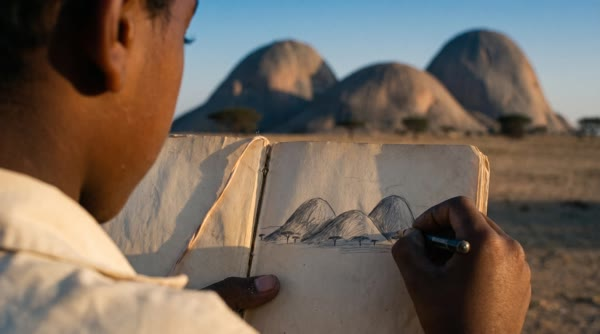
- الكاميرا
- واسعة للجبال ثم الرسم في الدفتر
- الصوت
- ريح، القلم على الورق
- الانتقال
- الريح تقلب الصفحة وتكشف جبل مرة
جبل مرة ودارفور
01:56 – 02:10الطفلما الذي تحتاج إليه الحياة هنا كي تزدهر من جديد؟
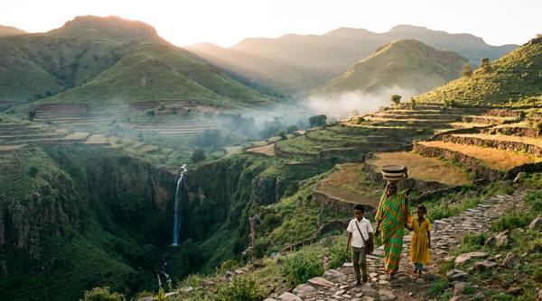
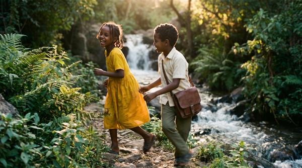
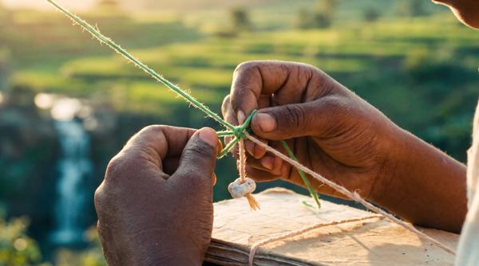
- الكاميرا
- واسعة ثم تتبّع على المسار
- الصوت
- ماء وطيور
- الانتقال
- الجري يستمر في جبال النوبة
جبال النوبة
02:10 – 02:24الطفلما الذي تحبّ أن أعرفه عن حياتكم هنا؟
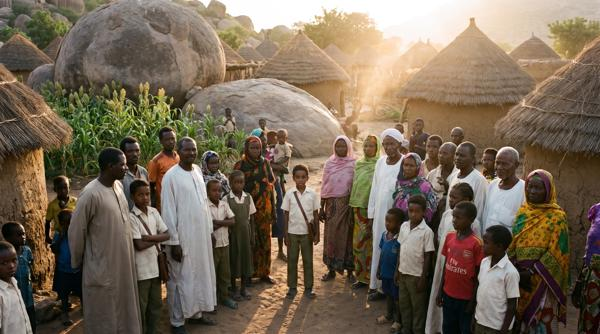
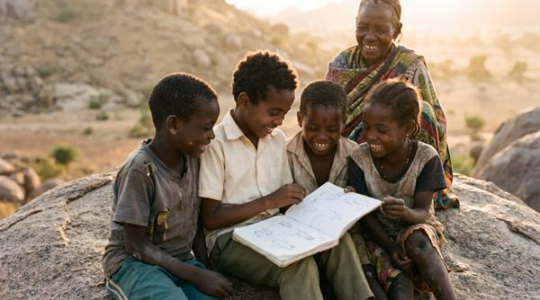
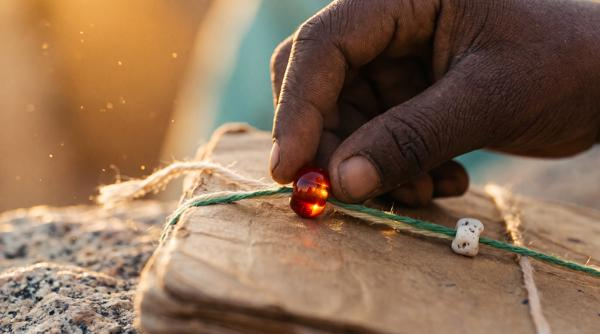
- الكاميرا
- مجموعة على مستوى نظر الطفل
- الصوت
- أصوات الأهالي والأطفال
- الانتقال
- هبّة غبار تكشف مروي
مروي والذاكرة
02:24 – 02:38الجدماذا نستطيع أن نترك لمن سيأتون بعدنا؟
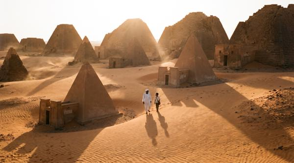
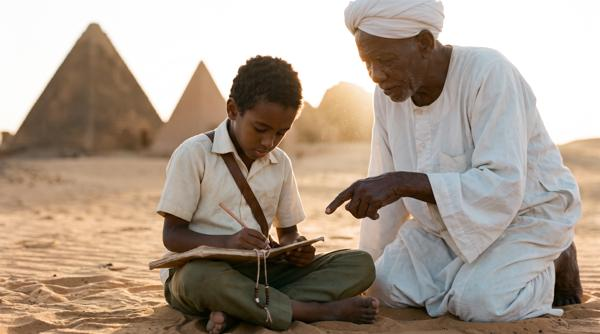
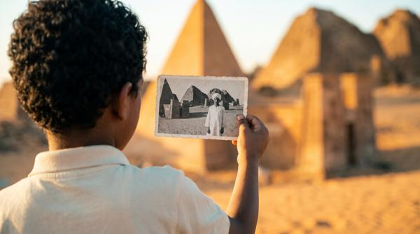
- الكاميرا
- واسعة للآثار ثم رسم الطفل
- الصوت
- ريح خفيفة
- الانتقال
- بصمة إصبعه تصبح حقول الضفة
المزارعة تبدأ الموسم
02:38 – 02:56الطفلما الذي تحتاجين إليه لتبدئي الموسم بثقة؟
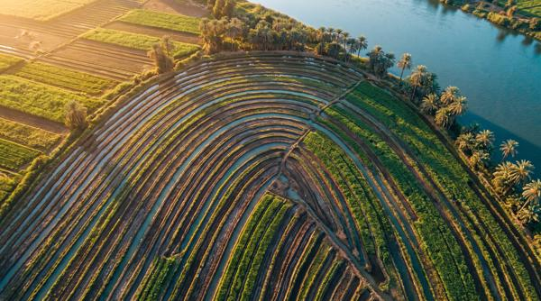
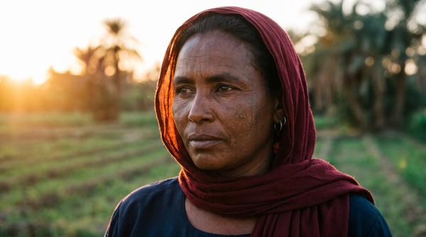
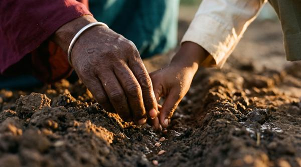
- الكاميرا
- وجه المزارعة ثم اليدان والتربة
- الصوت
- ماء القنوات، صوتها
- الانتقال
- الأيدي في التربة ثم الماء على الشتلة
الطفل يرعى الشتلة
02:56 – 03:08الراويوفي الحقل، عرف أن الحياة تحتاج إلى رعاية.
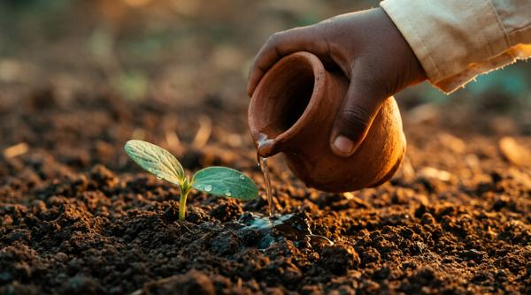
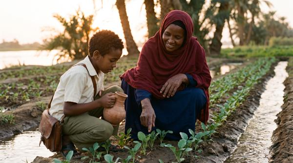
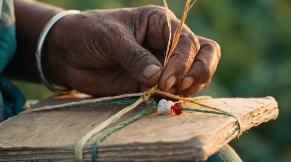
- الكاميرا
- قريبة على الماء والشتلة
- الصوت
- ماء يُسكب
- الانتقال
- دوائر الماء تقود إلى المرعى
الثروة الحيوانية
03:08 – 03:20الطفلكيف نحفظ رزق الناس والأرض التي تجمعهم؟
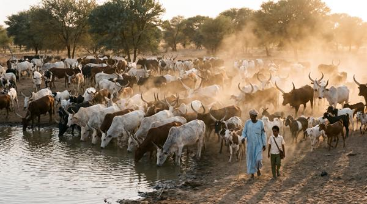
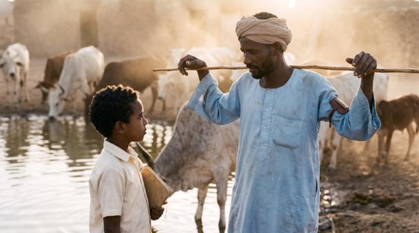
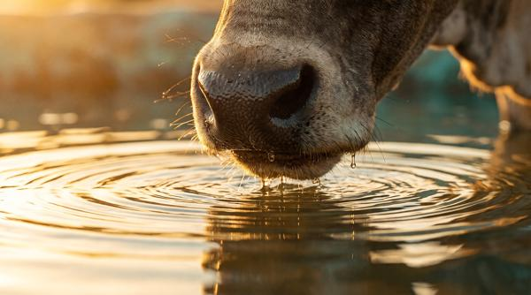
- الكاميرا
- واسعة للقطيع ثم الراعي والطفل
- الصوت
- القطيع والماء
- الانتقال
- غبار القطيع يكشف المنجم
التعدين والموارد
03:20 – 03:32الطفلكيف تتحوّل ثروة الأرض إلى حياة أفضل لأهلها؟
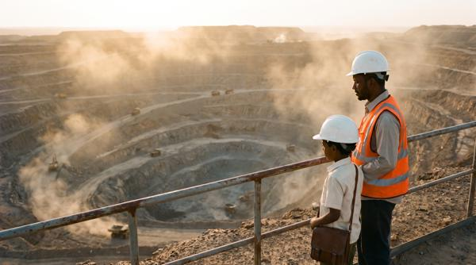
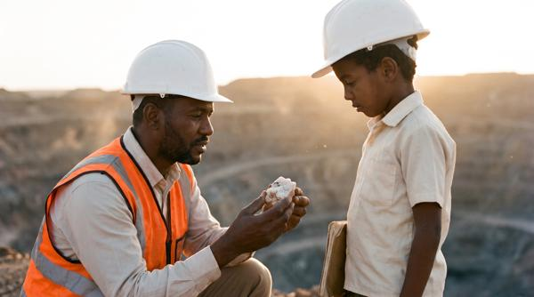
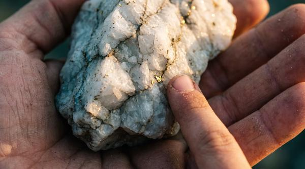
- الكاميرا
- تفصيل العيّنة ثم الموقع من بعيد
- الصوت
- ريح ومحركات بعيدة
- الانتقال
- حبيبات الصخر تصبح خشب الورشة
الأيدي التي تبني الغد
صاحب الورشة يفتح بابه
03:32 – 03:50الطفلما أوّل عمل بدأت به حين عدت إلى مهنتك؟
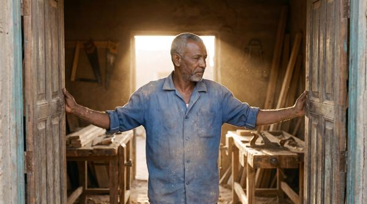
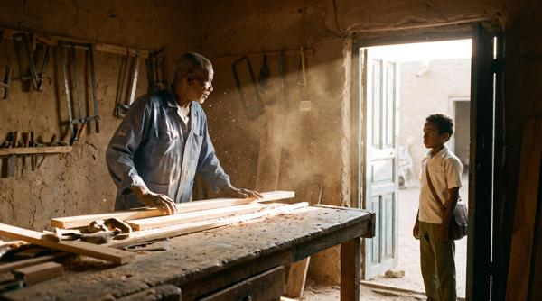
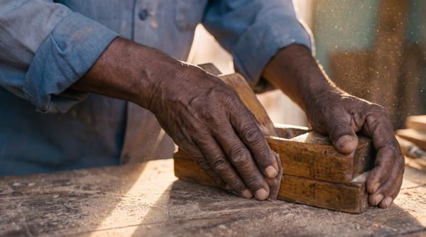
- الكاميرا
- متوسطة للحرفي وفتح الباب
- الصوت
- أبواب خشب، غبار، صوته
- الانتقال
- نقطع إلى يد الطفل على الخشب
الطفل يتعلّم حرفة
03:50 – 04:04الطفلهل تعلّمني شيئًا أستطيع أن أبدأ به؟
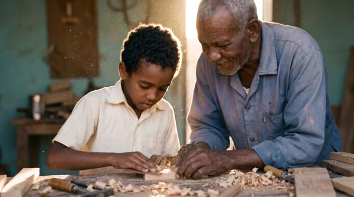
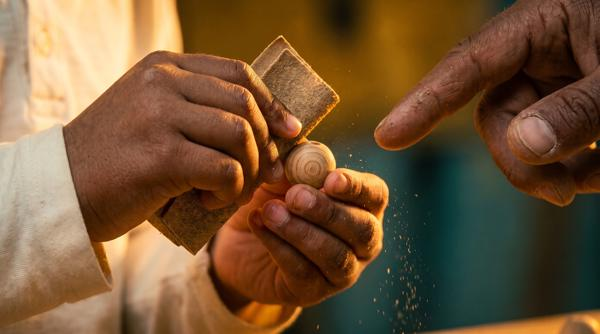
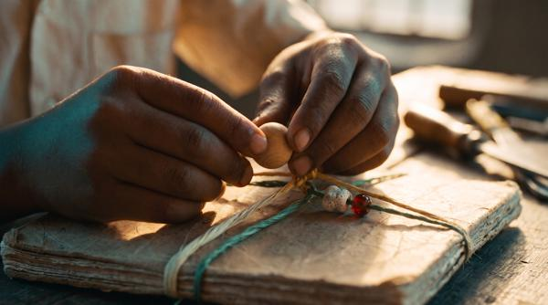
- الكاميرا
- ثنائية ثم اليدان
- الصوت
- الصنفرة، ضحكة الحرفي
- الانتقال
- الخرزة الخشبية ثم الطين الدوّار
التراث وصناعة الفخار
04:04 – 04:16الطفلما الحكاية التي تحملها هذه الصنعة؟
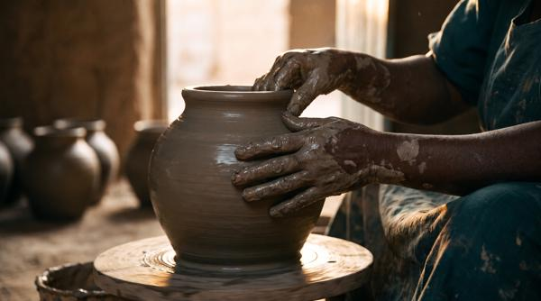
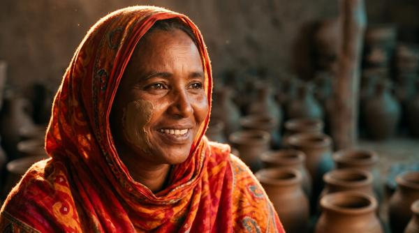
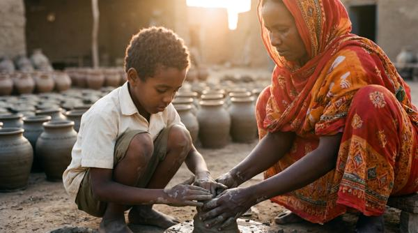
- الكاميرا
- قريبة للصنعة ثم وجه الحرفية
- الصوت
- الطين، صوتها وهي تحكي
- الانتقال
- إيقاع الطين يصبح إيقاع الطبل
رقصة تجمع الأجيال
04:16 – 04:30الطفلهل تعلّمني خطوة واحدة ونؤدّيها معًا؟
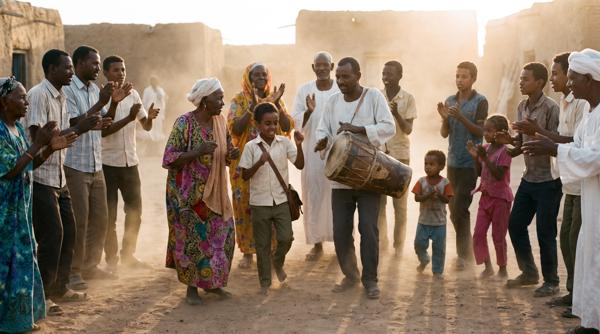
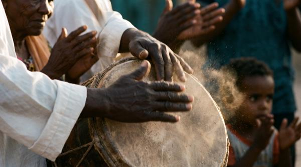
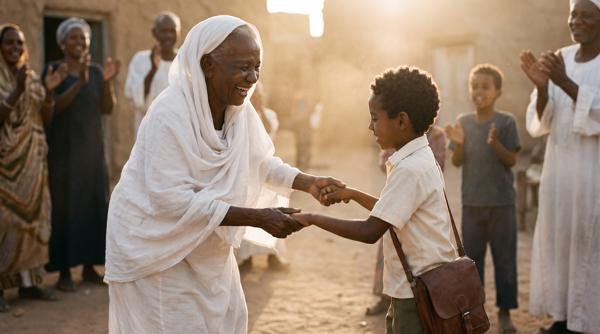
- الكاميرا
- واسعة للحركة ثم تفصيل الإيقاع
- الصوت
- طبول حيّة وتصفيق
- الانتقال
- الخطوة تهدأ على حصيرة الرسم
طفلان وصفحة واحدة
04:30 – 04:48الراويكلما أضاف رسمًا إلى دفتره، أضاف إنسانًا إلى قلبه.
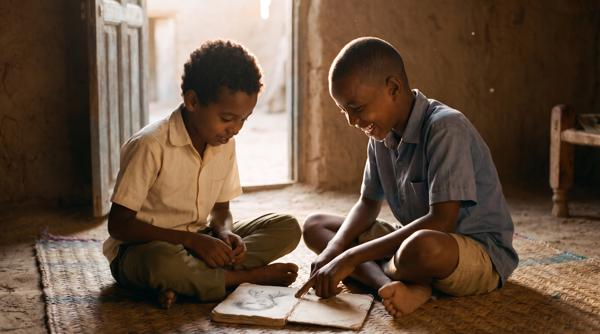
- الكاميرا
- ثنائية ثم صفحة مشتركة
- الصوت
- ضحك خافت، القلم
- الانتقال
- الصفحة تُغلق والكرة تتدحرج
اللعبة المشتركة
04:48 – 04:58الطفلكيف نستقبل صديقًا جديدًا؟
- الكاميرا
- تتبّع خفيف على مستوى الأطفال
- الصوت
- ضحك وركلات الكرة
- الانتقال
- من الشارع إلى الفصل
المعلّمة تجهّز الفصل
04:58 – 05:16الطفلما الذي تتمنّين أن يعود إلى حياة الأطفال؟
- الكاميرا
- متوسطة للمعلّمة ثم ترتيب المقاعد
- الصوت
- نوافذ تُفتح، طباشير
- الانتقال
- الباب يمتلئ بالأطفال
المدرسة تستعيد أصواتها
05:16 – 05:32الراويوفي الورشة والمدرسة، رأى الغد يُصنع أمامه.
- الكاميرا
- من الباب إلى الفصل
- الصوت
- قراءة جماعية بصوت عالٍ
- الانتقال
- وجوه الأطفال واحدًا واحدًا
أحلام الأطفال
05:32 – 05:50الطفلماذا تريد أن تستطيع فعله في بلدك؟
- الكاميرا
- قريبة متبادلة لوجوه الأطفال
- الصوت
- إجاباتهم بأصواتهم
- الانتقال
- إلى ظل الشجرة
الأهالي والجيش
05:50 – 06:02الطفلماذا تتمنّى لأطفال السودان؟
- الكاميرا
- لقاء إنساني سلمي
- الصوت
- شاي، أصوات هادئة
- الانتقال
- كوب الشاي ثم ضوء المصباح ليلًا
الصفحة الأخيرة
06:02 – 06:14الراويوحين عاد، كانت الصفحة الأخيرة تنتظره.
- الكاميرا
- تفصيل الدفتر والقلم
- الصوت
- القلم، اللمبة
- الانتقال
- كلمة «غدًا» ثم ضوء الصباح على التراب
الزرع الجماعي
06:14 – 06:38الراويثم انحنى إلى الأرض، وزرع ما حمله طوال الطريق.
- الكاميرا
- تبدأ باليدين وتتّسع للطفلين والجد
- الصوت
- ماء يُسكب، ريح خفيفة
- الانتقال
- الخيط على الشتلة ثم العلم في ساحة المدرسة
الاستقلال والغد
06:38 – 07:00الراويوطنٌ ينبت فينا… ويكبر بما نصنعه معًا.
- الكاميرا
- ختام بوجوه الأطفال والعلم
- الصوت
- أصوات الناس، ثم سكون
- الانتقال
- شارة الذكرى 71